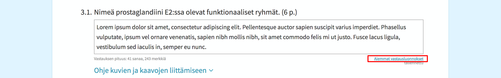
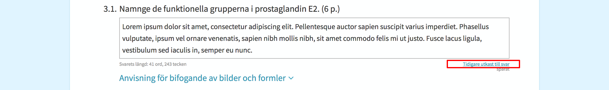
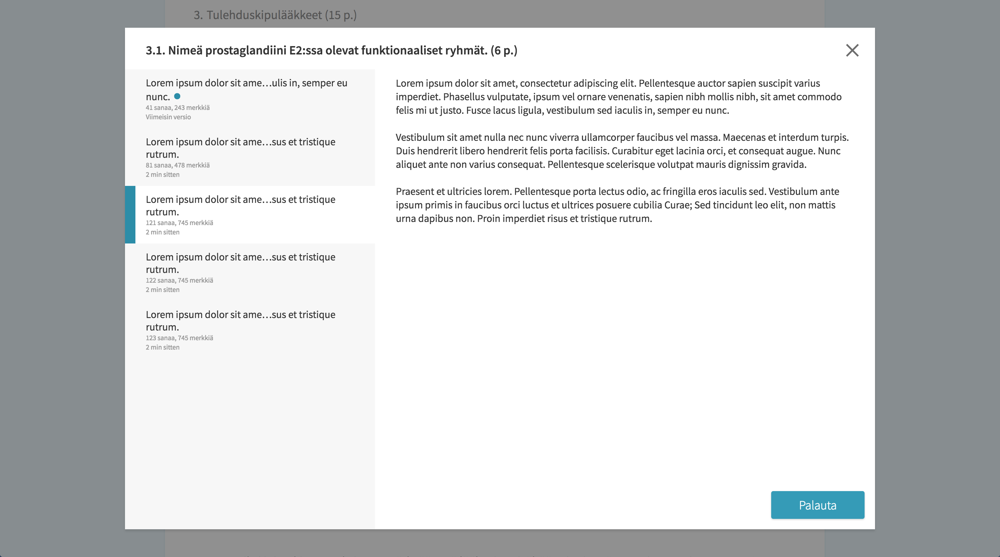
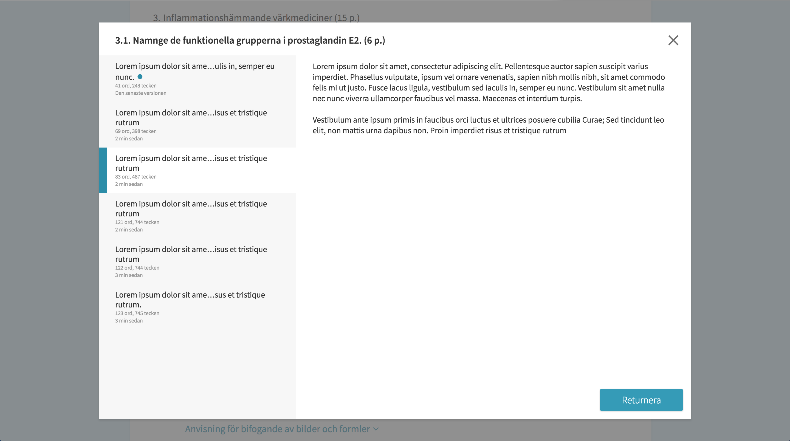

| Kopioi Kopiera |
 +
+

|
| Liitä Klistra in |
+

|
| Leikkaa Klipp ut |
+

|
| Valitse kaikki Välj alla |
+

|
| Palauta Ångra |
+

|
| Tee uudelleen Gör om |
+

|
Ikkunoiden ja välilehtien järjestäminen
Ordna fönster och flikar
Videossa ei ole ääntä.
Videon saknar ljud.
Aiemman vastausluonnoksen palauttaminen
Returnering av tidigare utkast till svar
Voit palauttaa vastauskentän aiemmin tekemäsi luonnoksen seuraavien ohjeiden mukaisesti. Kokeen valvoja saa avustaa sinua toiminnallisuuden käytössä, mutta ei osallistua palautettavan sisällön valintaan.
Du kan returnera ett tidigare utkast till svar i svarsfältet enligt följande instruktioner. Provets övervakare får hjälpa dig med att använda funktionaliteten, men får inte ta del i valet av innehållet som returneras.
- Paina kentän oikeasta alalaidasta linkkiä "Aiemmat vastausluonnokset".
 - Tryck på länken "Tidigare utkast till svar" i nedre högra kanten av svarsfältet.
 - Valitse vastauskentässä aiemmin ollut sisältö ja paina "Palauta".
 - Välj ett tidigare innehåll av svarsfältet och tryck på "Återställ".

Kuvakaappauksen liittäminen vastaukseen
Bifoga en skärmdump till svaret
Videossa ei ole ääntä.
Videon saknar ljud.
Tiedostojen tallentaminen
Spara filer
Videossa ei ole ääntä.
Videon saknar ljud.
CSV-tiedostona annetun aineiston avaaminen oheisohjelmassa
Öppna material som ges som CSV-fil i bifogat program
Tallenna ensin CSV-tiedosto. Tämän jälkeen avaa Sovellukset-valikosta oheisohjelma.
Börja med att spara CSV-filen. Efter detta öppna det bifogade programmet från Program-menyn.
GeoGebra 5
- Valitse Näytä-valikosta Taulukkolaskenta
- Välj från Visa-menyn Kalkylblad
- Vie kursori taulukon soluun ja valitse hiiren oikealla napilla "Tuo datatiedosto ..."
- För kursorn i tabellens cell och välj med högra musknappen i Kalkylbladet "Importera datafil..."
- Valitse tallentamasi tiedosto ja paina Avaa
- Välj den sparade filen och tryck på Öppna
GeoGebra 6
- Valitse Näytä-valikosta Taulukkolaskenta
- Välj från Visa-menyn Kalkylblad
- Avaa valikko, valitse "Tiedosto"-otsikon alta "Avaa"
- Öppna menyn, välj "Öppna" under rubriken "Arkiv"
- Valitse oikeasta sivupalkista harmaa kansiokuvake
- Välj den gråa filikonen från den högra sidbalken
- Valitse tallentamasi tiedosto ja paina "Avaa"
- Välj den sparade filen och tryck på "Öppna"
LibreOffice Calc
- Valitse Tiedosto-valikosta "Avaa..."
- Välj från Arkiv-menyn "Öppna..."
- Valitse tallentamasi tiedosto ja paina Avaa
- Välj den sparade filen och tryck på Öppna
Logger Pro
- Valitse Tiedosto-valikosta "Tuo" ja edelleen "CSV..."
- Välj från Arkiv-menyn "Öppna" och sedan "CSV..."
- Valitse tallentamasi tiedosto ja paina Avaa
- Välj den sparade filen och tryck på Öppna
ClassPad Manager for ClassPad II Series
- Siirrä CSV-tiedosto ClassPad Managerin kotikansion CASIO sisällä olevaan ClassPad Manager for ClassPad II -kansioon. Kansio syntyy työpöydälle ClassPad Managerin avaamisen yhteydessä.
- Flytta CSV-filen i katalogen ClassPad Manager for ClassPad II som finns i hemkatalogen CASIO. Katalogen skapas på skrivbordet efter att ClassPad Manager har öppnats.
- Valitse Spreadsheet
- Välj Spreadsheet
- Valitse Spreadsheetin File-valikosta CSV ja edelleen "CSV Format"
- I fönstret Spreadsheet, välj från File-menyn CSV och sedan "CSV Format"
- Aseta avattavalle tiedostolle sopiva kenttien erotin sekä desimaalierotin ja paina OK
- Välj passande fältavgränsare och decimaltecken för filen och tryck på OK
- Valitse Spreadsheetin File-valikosta CSV ja edelleen "Open CSV"
- I fönstret Spreadsheet, välj från File-menyn CSV och sedan "Open CSV"
- Valitse tallentamasi tiedosto ja paina Open
- Välj den sparade filen och tryck på Open
TI-Nspire CX CAS Student Software
- Valitse Lisää-valikosta Vernier DataQuestTM
- Välj från Infoga-menyn Vernier DataQuestTM
- Avaa CSV-tiedosto LibreOffice Calc -ohjelmassa (ks. yllä)
- Öppna CSV-filen i LibreOffice Calc -programmet (se ovan)
- Maalaa ja kopioi data LibreOffice Calc -ohjelmassa
- Måla och kopiera datat i LibreOffice Calc -programmet
- Valitse Taulukkonäkymä-ikoni Vernier DataQuestTM-sivun alalaidasta.
- Välj Tabellvyn genom ikonen nere på Vernier DataQuestTM-sidan
- Liitä data Vernier DataQuestTM-sivuun
- Klistra in data i Vernier DataQuestTM-sidan
- Tarkista, että tyhjiä sarakkeita on yhtä monta kuin tuotavia sarakkeita
- Kontrollera, att du har lika många tomma kolumner som datat du skall infoga
- Maalaa koko taulukko aktiiviseksi
- Måla hela tabellen aktiv
- Paina hiiren oikeaa nappia ja valitse Muokkaa ja edelleen Liitä
- Tryck på högra musknappen och välj Redigera och sedan "Klistra in"